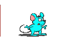
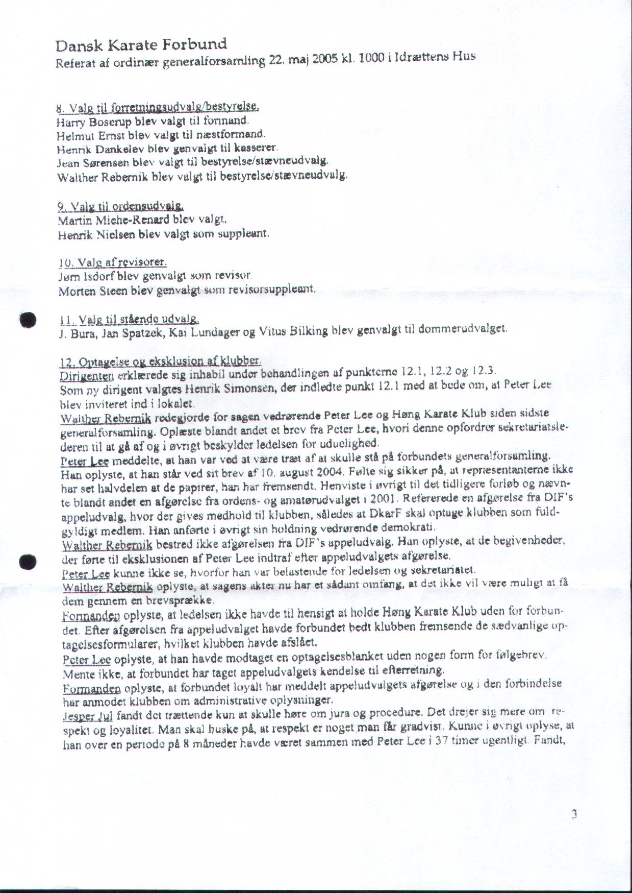
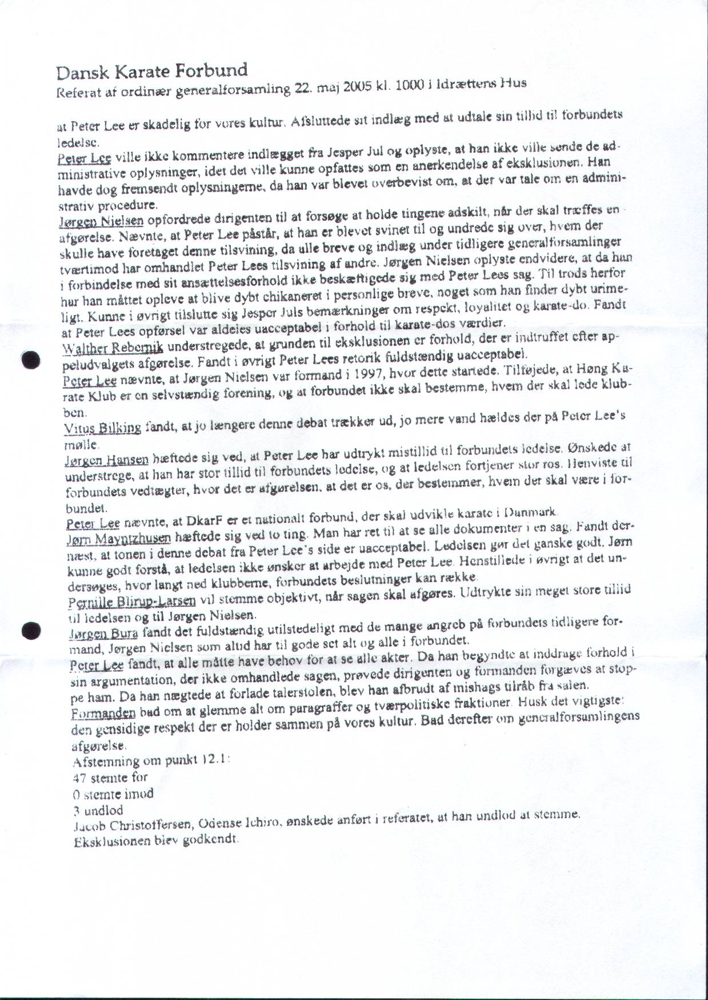
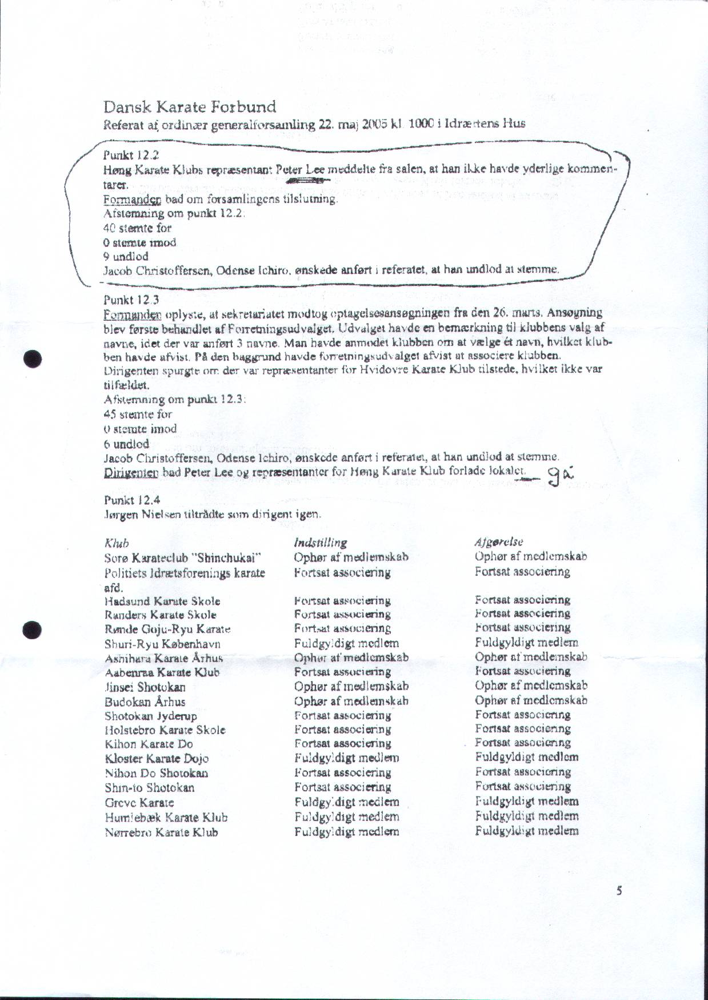

General facts about Peter Larsen alias Peter Lee (and some of his own claims)- He is born on 24 July 1971 in Denmark, under the name Peter Larsen. Eye witnesses tell that one day he was running through his dojo, kicking and punching in the air and shouting "I'm Bruce Lee, I'm Bruce Lee, I'm Bruce Lee!!!"... Not long after that, he changed his name into Peter Lee... Since Bruce Lee is a true legend and his name should not be used in a disgraceful way, we refuse to go along with this "name change" and we therefore keep calling him by his real name: Peter Larsen, or just Peter;
- Peter started training "martial arts" at the age of ten (his own words), so that must be since 1981 (no proof found of this). It is not known if he meant karate by that, but probably not (unless he stopped for a longer period), since he had only BLUE belt (2nd kyu in Denmark) in Genseiryu karate in 1995;
- He started to learn karate in one of several dojos that were setup by a respectable Japanese teacher called Yokio Tonegawa in the 60s and 70s in Denmark. The name of this dojo is Genshi-kan and the style they train there is called Genseiryu Karate. The exact date he began at this Genseiryu karate school is still unknown but it was somewhere in the first half of the 1980s... Funny thing is that, today, Peter claims that all dojo that sprung from sensei Tonegawa's visit are "false Genseiryu dojo". Why does he say this? Maybe because he is still angry because he was thrown out of the dojo (see point below), but your guess is as good as mine;
- In the middle of the 1980s Peter Larsen was kicked out of that dojo, after a very shameful action of his: he tried to start his own dojo with a advertisement in a local newspaper, claiming he had the black belt although he still only had the 2th kyu at the time. Also he tried to convince his fellow students to come along with him to his "new" dojo. This is such a disgraceful thing that he was kicked out of the dojo and was told never to come back;
- After that, Peter switched to Shotokan Karate, in which (according eye witnesses) he got his 1th dan (in mid 1990s);
- Again, a very shameful action of Peter: after his 1st dan examination he totally disrespected his teachers and examiner, by saying that he should have been awarded a higher dan than the first dan. He felt he should have been awarded the 2nd dan right away. So, he got kicked out of a dojo for a second time (somewhere mid 1990s);
- It is unknown where he was training at the time, or whether he was training in some dojo at all, but during a Genseiryu-Butokukai Championship in 1996 he meets Sensei Kunihiko Tosa, the head instructor of Genseiryu-Butokukai (own saying, although Peter never mentioned the suffix Butokukai);
- In February 1997 Peter was appointed (by sensei Tosa) "chief instructor" to Genseiryu-Butokukai in Europe (own saying, again without mentioning Butokukai );
- On 30 July 1999 Peter claims to have the 4th dan, about 4 years after he still had only a blue belt in that style;
- On 19 January 2001 Peter was appointed by sensei Tosa as president of Genseiryu-Butokukai in Denmark (own saying, again, no Butokukai in Peter's claims);
- On 15 July 2003 Peter Larsen claims his 5th dan. Both certificates (4th and 5th dan) suddenly appear on Peter's web site. The certificate show Peter's alias "Peter Lee" and a signature of sensei Tosa. Also, though low quality pictures, the "diploma's show the name of the style "Butokukai". Biggest question arises: why didn't Peter ever show the certificates for his 1th, 2nd and 3rd dan??? Also when you ask him about it, he avoids the question, doesn't want to answer... Maybe because he doesn't have them?!?;
- Peter Larsen is a policeman in Denmark. Although it's unknown if he is still working in this function, one of his colleagues once said that he is a "disgrace and a danger for the Danish culture."... So, even the police is not happy with him!
- Peter Larsen's qualities as a karateka??? Guess you are curious about that... Well, here are some videos of him, taken just a few years ago. In the first one he gets his butt kicked by his opponent, being way too slow and too indecisive, he looses 8-0. In the next one, he shows the kata sansai (the Genseiryu-Butokukai version), but his stances are way too short, his techniques too sloppy (maybe if he would have started with learning and training Ten-i, Chi-i and Jin-i no kata, his Sansai would be a little bit better):
General facts about Peter Larsen's dojo and organization
- Peter started his own dojo, called "Kentokukai" or by him called "GENSEIRYU® KARATE-DO KENTOKUKAI", situated in Hoeng, Denmark;
- The style Peter trains, is the style of sensei Kunihiko Tosa, the leader of GKIF (Genseiryu Karatedo International Federation). This style cannot use the name of Genseiryu inside Japan, because the rights of this name belong to the Shukumine family and only the original Genseiryu organization of which sensei Kanai is the Head Instructor can use this name. Any other styles have to use a suffix and so does the style of Tosa and Peter. In Japan they use the suffix Butokukai, so they call themselves Genseiryu-Butokukai. Peter doesn't live in Japan, so he gets away with it, using only Genseiryu, but in fact, his style is not Genseiryu, but Genseiryu-Butokukai;
- Peter and his school got thrown out of the Danish Karatedo Federation (DKF) on May 22, 2005, because of Peter's attitude. The was a special meeting about the membership of Peter Lee and his club. At the voting about throwing Peter Lee out of the DKF, 40 people voted FOR, 0 against and 9 neutral. Here are the minutes of that meeting (in Danish, but it's quite similar to English/Dutch and not that difficult to understand that the board of the DKF at that time didn't like Peter one bit):
 |
 |
 |
{kind=link}
{kind=link}
{kind=link}
General facts about Peter Larsen's Forum
- He is the creator of the forum and therefore 'ruler and master'... It is impossible to create an account on his forum and write anything against his accusations, even if you show evidence. He will delete it and block you. The exact same thing goes for his creation, "Genseipedia";
- He always talks about his research. An alleged research of 30 years (5 years ago he claimed it was 15 years!), solely performed by him, him alone. The results of this 'research' is however very one-sided. No discussion is possible, every word (with our without evidence) that is contrary to his own 'findings' is removed from his forum! Any questions that could hurt him or his research are also removed... See the REMOVED page for a couple of screen-copies of these removed inputs and questions and see this forum about removed messages;
- The forum is full of contradictions. See this forum about these contradictions!;
- As a GENERAL fact about this forum: it's false, spreading false information (in his own words: false propaganda), one-sided, not neutral, slandering and also unbrave (deleting any message that is a defense from the people who's name he slanders).
Some of the links above are referring to web sites, that have been deleted. We are working hard on it, to get the information back on line... Stay tuned!!!
LIES by Peter Larsen
Just a few of his biggest lies (avoiding to answer a good question, we also consider lying!):
- Peter Larsen calls himself Peter Lee all the time. Asking him what his real name is (on his forum), will only make him remove the message. Apparently he doesn't want anybody to know his real name. We discovered his real name via an (old) student who wants to remain anonymous: Peter Larsen...;
- He calls himself Shihan, 6th dan. Not only is this considered bragging in the martial arts world (modesty is a valuable characteristic in martial arts!), it is also not done in the Japanese culture (of which karate is part) to name yourself by your title (whether you deserve it or not). If he really has 6th dan, he is a Shihan, but to call yourself as such is pure arrogance! Now, if you ask him about his 1st, 2nd or 3rd dan of Genseiryu karate, he will simply avoid it. Because he doesn't have them!;
- He claims to be the only one in Europe ever being rewarded with 5th or 6th dan in Genseiryu. Besides the fact that he doesn't hold any dan in Genseiryu (the best, he holds it in Butokukai!), this is a lie, since there are a few others that have 5th, 6th or 7th dan in this style! For a start Sensei Nobuaki Konno of Genseiryu Netherlands is holding the 6th dan, awarded by sensei Shukumine himself (of which I have seen the proof), sensei Ahcene Bendjazia in Denmark also holds 6th dan in Genseiryu;
- In 2004-2005 he said he has been doing 15 year of research. Besides the fact that you can hardly call any of this an honest and neutral 'research', he is also totally contradicting himself. In 2009, on Wikipedia, he started to shout that he has been doing 30 years of research! Now, either Peter Lee is a very, very bad mathematician (15+5=???), or he is just shouting something in an effort to "impress" people. Not doing a very good job... If he really did 30 years of research, he started at age 8 with this...;
- In this alleged research he talks on and on about 'evidences'. Have you ever seen one of these evidences? Neither have we! We have asked for evidence many times, but then he always tells us to give him the opposite evidence! That is like when you're summoned to court for something you didn't do and the judge says "proof it that you didn't do it"! This was the case over 200 years ago. This is still the case in some 3rd world countries. But here you are innocent until proven guilty (in a court of law). Apparently Peter Lee doesn't live here... Anyway, all this evidences he keeps talking about, as long as he doesn't show them, we assume this just another lie!;
- He keeps claiming he is the top of Genseiryu in Europe, appointed by sensei Tosa. Now, this sensei Tosa is in Japan the head of Genseiryu-Butokukai, another style that is derived from Genseiryu but different from the original. In Japan, sensei Tosa is summoned, by law, to use the additional term Butokukai. He is NOT allowed to use just Genseiryu. That means that IF Peter Lee is the head of anything in Europe, he would be the head of Genseiryu-Butokukai!;
- He keeps claiming that in Japan, Butokukai (now he suddenly doesn't mind to use the term butokukai, 'cause here it seems convenient!) is the only Genseiryu-style that is recognized by the JKF (Japan Karatedo Federation). Read the first picture of the REMOVED posts from his forum to clear up why also this is a lie.
<HOME>